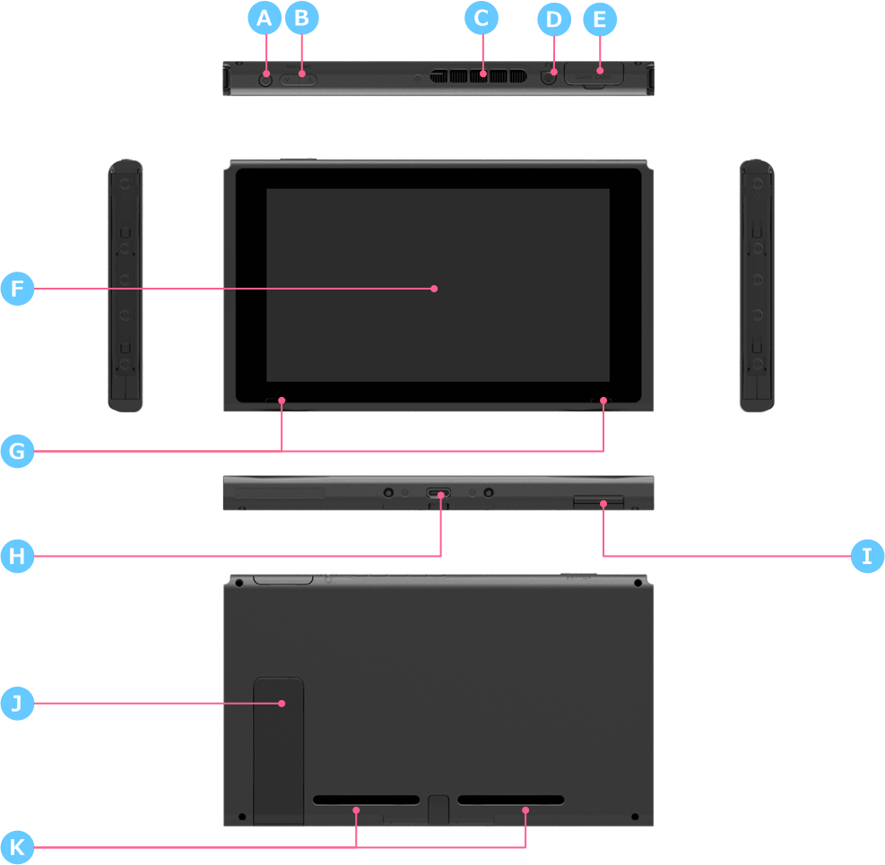

|
Item
|
Name
|
Description
|
|---|---|---|
| A | POWER Button | Operates the console sleep mode and turns the console on and off. |
| B | Volume buttons | Two buttons for adjusting the volume. |
| C | Air vent | The air vent for the console cooling fan. |
| D | Headset jack | The device does not have a built-in mic. A headset must be connected to this port to use in-game chat or similar features. |
| E | Game card slot | A new game card slot. The game cards for previous hardware platforms, such as Nintendo 3DS, are not compatible, and cannot be inserted. |
| F | LCD/Touch Screen | 6.2-inch IPS LCD screen (1280×720 resolution). A capacitive multi-touch panel that detects multiple points of contact will be provided. Up to 10 touch points can be detected at the same time. |
| G | Speakers | We plan to use two speakers of the same quality as those used in the New Nintendo 3DS. |
| H | USB connector (Type-C™ shape) | Used to charge the NX console and for connecting to the NX dock. |
| I | microSD card slot | One microSD card slot is provided. Supported card types include SD, SDHC, and SDXC. |
| J | Stand | Built-in stand to allow the NX to stand on its own. Use when you want to remove the JOY-CON and play while watching the display. |
| K | Air intake | The air intake holes for the console cooling fan. |
| - | NX-SoC |
SoC equivalent to Tegra X1 from NVIDIA. |
| - | Main memory | 4 GB of LPDDR4. This memory (VRAM) is also used for displaying graphics on the screen. We are currently considering how much memory will be available for application use. |
| - | System memory | 32 GB. |
| - | Wireless |
IEEE 802.11 a/b/g/n/ac and Bluetooth 4.0 +LE are included. We are currently considering a proprietary protocol for local communication based on IEEE 802.11 n. |
| - | Accelerometer | This sensor detects changes in inclination and motion. |
| - | Gyro sensor | This sensor detects changes in angle and rotation speed. |
| - | Brightness Sensor | A sensor to adjust the LCD brightness based on the ambient brightness. |
| - | Cooling fan | Fan to cool the device surface and internal components. |
| - | Battery pack | A 4310-mAh rechargeable battery is included. Battery charges last for approximately three hours (the same as for the Nintendo 3DS). This estimated duration is under normal conditions and use, and the actual duration may differ depending on actual usage conditions. |
The following devices are deactivated when the NX is docked in the NX dock.
The following devices, which were incorporated in previous hardware, including the Nintendo 3DS family and the Wii U GamePad, will not be included in the NX.
CONFIDENTIAL